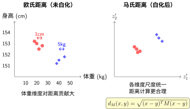
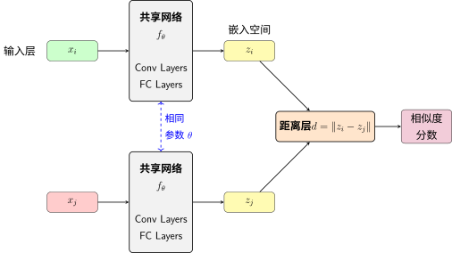
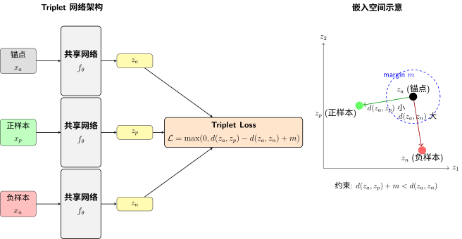

第二部分：分类体系与网络架构#
本部分系统梳理度量学习的分类方法，从传统线性方法到深度度量学习的网络架构演进，帮助你建立清晰的知识框架。
2.1 度量学习的方法分类#
度量学习方法可以从多个维度进行分类。理解这些分类有助于我们根据具体任务选择合适的方法。
度量学习方法分类体系#
2.1.1 按学习方式分类#
监督式度量学习（Supervised Metric Learning）
这是最常用的形式，假设我们有标注数据指示哪些样本应该相似、哪些应该不同。监督信号可以呈现为：
类别标签：同一类别的样本相似，不同类别不相似
成对标签：显式标注样本对是否相似（must-link vs cannot-link）
相对标签：三元组形式（\(x_i\) 与 \(x_j\) 比 \(x_i\) 与 \(x_k\) 更相似）
监督式方法的优势在于可以明确优化目标，缺点是需要大量标注数据。深度度量学习通常采用监督式学习。
非监督式度量学习（Unsupervised Metric Learning）
在没有显式相似性标签的情况下，方法必须从未标注数据中发现结构。常见策略包括：
基于流形假设：假设数据位于低维流形上，学习保持流形结构的度量
基于聚类：通过聚类结果推断相似性，迭代优化度量
基于重构：自编码器等方式学习特征，隐式定义度量
非监督方法的挑战在于难以定义"正确"的相似度，因为相似性本身是任务相关的。
半监督式度量学习（Semi-supervised Metric Learning）
结合少量标注数据和大量未标注数据。利用未标注数据的分布信息辅助度量学习，在标注数据稀缺时特别有用。
2.1.2 按变换性质分类#
线性度量学习
假设存在一个线性变换可以将数据映射到合适的度量空间。数学上，这等价于学习一个马氏距离矩阵 \(M\)：
其中 \(M\) 必须是半正定矩阵（\(M \succeq 0\)），以确保满足度量公理。
线性方法的优势：
计算高效，尤其在高维数据上
具有凸性，优化过程稳定
可解释性强，可以分析哪些特征维度被赋予更高权重
线性方法的局限：
无法捕捉复杂的非线性关系
在数据分布复杂的真实场景中表现受限
非线性度量学习
通过非线性变换学习度量，包括：
核方法：将数据映射到高维特征空间，在高维空间学习线性度量
深度网络：使用神经网络学习复杂的非线性映射
流形学习方法：假设数据位于低维流形，学习保持流形结构的度量
非线性方法虽然更强大，但也更难以优化，容易过拟合，需要更多的训练数据和正则化技术。
2.1.3 按局部性分类#
全局度量学习（Global Metric Learning）
学习一个适用于整个数据集的全局度量。这意味着所有样本对使用相同的距离计算方式。全局方法的假设是数据具有统一的几何结构。
典型方法：
RCA [BHHSW05]：利用等价约束学习全局度量
ITML [DKJ+07]：在信息论框架下学习度量
MCML（Mahalanobis Metric for Clustering）：针对聚类任务优化
局部度量学习（Local Metric Learning）
认识到数据的不同区域可能需要不同的度量。例如在人脸识别中，不同种族、年龄段的人脸可能适合不同的度量标准。
局部方法通常：
为每个样本或每个局部区域学习独立的度量
在预测时根据查询位置选择合适的度量
在KNN等局部方法中特别有效
典型方法：
LMNN [WBS09]：大间隔最近邻，局部自适应
PLML（Parametric Local Metric Learning）：参数化局部度量
全局 vs 局部：选择指南
场景 |
推荐方法 |
原因 |
|---|---|---|
数据分布均匀 |
全局方法 |
更简单高效 |
多模态分布 |
局部方法 |
更灵活适应 |
大规模数据 |
全局方法 |
计算开销小 |
需要高精度 |
局部方法 |
局部自适应能力强 |
注意：局部方法计算开销更大，需要权衡精度与效率。
2.2 传统度量学习方法#
在进入深度度量学习之前，理解传统方法有助于我们把握问题的本质。许多深度度量学习的思想都源于这些经典工作。
2.2.1 马氏距离学习框架#
传统度量学习的核心是学习一个马氏距离。这与学习欧氏距离的区别在于引入了协方差矩阵 \(M\)，可以调整不同特征维度的重要性并考虑特征间的相关性。
马氏距离通过协方差矩阵进行"白化"，消除量纲和尺度的影响，使距离计算更合理。例如身高（150-200cm）和体重（50-100kg）的数值范围不同，直接使用欧氏距离会导致体重维度的贡献过大。

欧氏距离 vs 马氏距离
优化问题的一般形式：
其中 \(\mathcal{L}(M)\) 是基于相似性约束定义的损失函数，约束 \(M \succeq 0\) 保证 \(M\) 是半正定矩阵（马氏距离成为合法度量的必要条件）。
小心
约束 \(M \succeq 0\) 确保马氏距离满足度量公理（非负性、对称性、三角不等式）。如果 \(M\) 不是半正定的，距离可能为负值，失去几何意义！
2.2.2 代表性传统方法#
RCA（Relevant Component Analysis） [BHHSW05]
RCA利用"等价约束"（chunklet）——已知相似的样本组。其核心思想是：
RCA算法步骤：
计算每个chunklet内的协方差矩阵 \(\Sigma_k\)
取平均：\(\Sigma_{\text{intra}} = \frac{1}{K}\sum_{k=1}^K \Sigma_k\)
学习度量：\(M = \Sigma_{\text{intra}}^{-1}\)
直觉上，RCA放大了在chunklet内变化大的方向（这些方向对区分类别不重要），压缩了变化小的方向（这些方向包含类别信息）。
RCA优缺点：
优点：
计算简单，只需矩阵求逆
有闭式解，无需迭代优化
缺点：
不能利用"不相似"的信息
假设数据服从高斯分布
LMNN（Large Margin Nearest Neighbor） [WBS09]
LMNN直接优化KNN分类性能。其核心思想是：对于每个样本，其 \(k\) 个最近邻应该来自同一类别（目标邻居），同时不同类别的样本应该与目标邻居保持至少一个间隔。
损失函数包含两项：
LMNN的推拉机制：Pull项拉近目标邻居（同类样本），Push项推远不同类别的样本并保持间隔。这与深度度量学习的Triplet Loss思想一致！
LMNN的优势在于直接优化分类性能，在大规模数据上表现良好；缺点是需要求解半定规划（SDP），计算开销大。
ITML（Information Theoretic Metric Learning） [DKJ+07]
ITML从信息论角度学习度量，要求学到的度量与先验度量（通常是欧氏距离）不要太"远"，同时满足相似性约束。
ITML使用LogDet散度作为正则化项：
其中 \(D_{\text{ld}}\) 是LogDet散度，\(M_0\) 通常是单位矩阵。
ITML的核心思想：通过LogDet散度约束防止学到的度量偏离先验太远，使用Bregman投影高效求解，特别适合小样本场景。
KISSME（Keep It Simple and Straightforward MEtric learning） [KHW+12]
KISSME采用统计学习方法，假设相似和不相似的样本分别服从高斯分布：
其中 \(\Sigma_{\text{pos}}\) 是相似样本对的协方差，\(\Sigma_{\text{neg}}\) 是不相似样本对的协方差。
KISSME：简单即美
优势：
计算极其高效（只需计算协方差矩阵）
闭式解，无需迭代优化
适合大规模数据
局限：
假设高斯分布可能不成立
无法捕捉复杂的非线性关系
NCA（Neighborhood Component Analysis） [GHRS05]
NCA直接优化KNN的留一法（leave-one-out）分类准确率。通过软分配的方式定义邻居概率，避免离散优化。
NCA的目标函数：
其中 \(p_{ij} = \frac{\exp(-d_M^2(x_i, x_j))}{\sum_{k \neq i} \exp(-d_M^2(x_i, x_k))}\) 是 \(x_i\) 选择 \(x_j\) 作为邻居的概率。
NCA的创新在于使用软邻居分配：\(p_{ij} \propto \exp(-d_M^2(x_i, x_j))\)，距离越近成为邻居的概率越大，使优化可微分。
NCA的优势在于直接优化分类性能，没有显式的间隔约束；缺点是目标函数非凸，优化困难。
2.2.3 传统方法的局限与启示#
传统方法的共同局限：
局限 |
说明 |
影响 |
|---|---|---|
线性假设 |
无法捕捉非线性关系 |
在复杂数据上表现受限 |
特征工程依赖 |
需要手工设计特征（SIFT、HOG） |
泛化能力差 |
高维计算 |
学习 \(d \times d\) 矩阵 |
高维时计算量大 |
扩展性差 |
难以处理大规模数据 |
实用性受限 |
但这些方法提供了深刻的洞见，这些思想在深度度量学习中得到了继承和发展：
传统方法的核心洞见：
推拉机制（Pull-Push）：同时拉近正样本、推远负样本，这是所有度量学习的基础思想
间隔最大化（Margin Maximization）：不同类别之间应保持安全距离，防止过拟合，提高泛化能力
正则化的重要性：防止过拟合，保持度量的合理性
局部性思想：不同区域可能需要不同度量，启发后来的自适应方法
2.3 深度度量学习的网络架构#
既然我们已经理解了Metric Learning的基本思想（学习特征向量，优化距离），接下来的问题是：如何设计网络来实现这一目标？
深度度量学习的核心创新是：将特征提取和度量学习联合进行。不同于Classification只需要处理单个样本，Metric Learning需要同时处理多个样本并比较它们的关系。
2.3.1 Siamese网络（孪生网络）—— 最基础的架构#
什么是Siamese网络？
Siamese网络通过两个完全相同的网络分支（共享权重）分别处理两个输入样本，输出特征向量后计算距离。两个分支使用完全相同的参数（权重共享），就像连体双胞胎，因此称为"孪生"网络。
Siamese网络 [BGL+93] 是最早的度量学习架构之一，最初用于签名验证。

Siamese网络架构
Siamese网络关键特性：
特性 |
说明 |
优势 |
|---|---|---|
权重共享 |
两个分支使用相同参数 |
确保相同样本被一致映射 |
对称性 |
天然满足对称性 |
\(d(x_i, x_j) = d(x_j, x_i)\) |
灵活性 |
可使用任意主干网络 |
CNN、RNN、Transformer |
工作原理
给定样本对 \((x_i, x_j)\) 和标签 \(y_{ij} \in \{0, 1\}\)（1表示相似，0表示不相似）：
前向传播流程：
特征提取：
距离计算：
对比损失：
其中 \(m\) 是间隔（margin），表示不相似样本之间的最小期望距离。
应用场景：
签名验证 [BGL+93]：比较两个签名是否为同一人
人脸验证：1:1人脸比对
文本相似度：句子语义相似度判断
人脸聚类：将相似人脸自动分组
局限
小心
Siamese网络一次只考虑两个样本，忽略了样本间的相对关系。
例子：样本A和B属于同一类但差异很大，样本A和C属于不同类但视觉相似。Siamese损失会独立优化每个对：拉近A和B，推远A和C。这可能导致冲突，因为没有明确表达"A与B的距离应该比A与C的距离小"。
2.3.2 Triplet网络（三元组网络）#
重要
Triplet网络 [SKP15] 是深度度量学习的里程碑工作，扩展了Siamese网络，一次处理三个样本：
锚点（Anchor）：参考样本
正样本（Positive）：与锚点同类的样本
负样本（Negative）：与锚点不同类的样本
核心洞见：通过相对比较优化，而非独立优化每对样本。

Triplet网络架构与三元组损失原理
三个分支共享相同的网络参数。
工作原理
三元组损失的核心约束是：锚点与正样本的距离应该远小于锚点与负样本的距离。
其中 \(m\) 是间隔。只有当 \(d(x_a, x_n) > d(x_a, x_p) + m\) 时损失为0，否则产生梯度推动模型学习。
Triplet的相对排序优化目标更符合相似度学习的本质：
场景：样本A和B属于同一类但差异很大（如同一个人的正面和侧面照），样本A和C属于不同类但视觉上相似（如金毛犬和拉布拉多犬）。
方法 |
优化目标 |
问题 |
|---|---|---|
Siamese |
独立优化 \((A,B)\) 和 \((A,C)\) |
既要把 \(A,B\) 拉近，又要把 \(A,C\) 推远，产生矛盾 |
Triplet |
\(d(A,B) < d(A,C) - m\) |
明确表达"A与B的距离应该比A与C的距离小"，相对排序 |
挑战与解决
挑战1：三元组数量爆炸
问题：对于 \(N\) 个样本、\(C\) 个类别，可能的三元组数量为 \(O(N^3)\)，无法全部遍历。
解决：在线难例挖掘（Online Hard Negative Mining）
在每个mini-batch中，对每个锚点：
选择最困难的正样本（hardest positive）：同类别中距离锚点最远的样本
选择最困难的负样本（hardest negative）：不同类别中距离锚点最近的样本
这样既减少了计算量，又聚焦于信息量最大的样本。
挑战2：训练不稳定
问题：如果随机选择三元组，大多数三元组已经满足约束（easy triplets），不产生梯度，训练停滞。
解决：Semi-Hard Negative Mining
选择满足以下条件的负样本：
即"比正样本远，但还没有远到满足间隔"的样本。这种样本提供了适度的难度：稳定训练，避免极端困难样本导致的梯度爆炸。
2.3.3 Quadruplet网络与更高阶架构#
Quadruplet Loss
Quadruplet网络 [CCZH17] 进一步扩展，一次处理四个样本。除了传统的triplet约束外，还引入额外的约束：不同类别样本间的距离应该大于正样本间的距离。
这种设计增强了模型的判别能力，特别适用于细粒度分类任务。
Higher-order架构
理论上，可以构建处理任意数量样本的网络：
N-pair Loss：一次处理一个锚点和 \(N-1\) 个负样本
Lifted Structured Loss：考虑batch内所有可能的正负样本对
这些方法的共同趋势是：从成对比较（pairwise）向结构化比较（structured）发展，更充分地利用batch内的样本关系。
2.3.4 采样策略的演进#
采样策略对深度度量学习的成功至关重要。以下是主要的发展脉络：
随机采样（Random Sampling）
最简单的方法，随机选择正样本和负样本组成三元组。问题是产生的大部分三元组很容易满足约束，不提供有效梯度。
离线难例挖掘（Offline Hard Mining）
定期（如每个epoch结束后）：
用当前模型对所有样本计算特征
找出最困难的样本对
在下一轮训练中重点使用这些样本
优点是能够找到全局最困难的样本；缺点是计算开销大，需要频繁重新计算特征。
在线难例挖掘（Online Hard Mining）
在每个mini-batch内动态选择困难样本。FaceNet的原始论文建议：
对每个锚点，选择：
Hardest Positive：同类别中距离最远的正样本
Hardest Negative：不同类别中距离最近的负样本
这种方法高效且稳定，成为标准实践。
Distance-Weighted Sampling
考虑样本距离分布，根据权重采样负样本。给那些"距离适中"的样本更高权重，避免极端困难或极端简单的样本。
Proxy-based Sampling
为每个类别学习一个代表性的"代理向量"（proxy），与代理比较而非与具体样本比较。这显著减少了需要比较的数量（从 \(O(N)\) 到 \(O(C)\)，\(C\) 是类别数）。
2.4 网络架构选择指南#
2.4.1 不同架构的适用场景#
架构选择速查表
架构 |
适用场景 |
优势 |
劣势 |
代表工作 |
|---|---|---|---|---|
Siamese |
二分类相似度任务 |
简单直观，训练稳定 |
忽略相对关系 |
[BGL+93] |
Triplet |
通用度量学习 |
捕获相对关系，效果好 |
采样复杂 |
[SKP15] |
Quadruplet |
细粒度分类 |
更强判别能力 |
更复杂的采样 |
[CCZH17] |
N-pair |
大规模类别 |
高效利用batch |
需要大批量 |
[Soh16] |
推荐：初学者从 Triplet 开始，实际项目根据数据特点选择。
2.4.2 主干网络选择#
度量学习的主干网络可以是任何提取特征的架构。
CNN架构选择
架构 |
特点 |
适用场景 |
|---|---|---|
ResNet [HZRS16] |
最常用，性能与计算量平衡 |
通用场景，ResNet-50/101标准选择 |
Inception [SLJ+15] |
多尺度特征 |
细粒度任务 |
EfficientNet |
计算效率高 |
移动端部署 |
设计考虑：
最后一层改为嵌入层（128维或256维）
移除最后的分类层（Softmax层）
添加L2归一化
Transformer架构：
ViT [DBK+21]：在图像度量学习中逐渐流行
适合需要全局上下文信息的任务
计算量较大，需要更多训练数据
2.4.3 实践建议#
重要
初学者路线图
第一阶段：Siamese网络 + Contrastive Loss
理解权重共享机制
掌握对比损失的基本原理
第二阶段：Triplet网络 + Triplet Loss
理解相对约束的优势
学习三元组采样
第三阶段：在线难例挖掘
Semi-Hard Negative Mining
训练稳定的关键！
实际项目建议
场景 |
推荐配置 |
原因 |
|---|---|---|
数据量小 (<1万张) |
预训练ResNet + Triplet Loss |
迁移学习提供良好初始化 |
类别多、每类样本少 |
Proxy-based方法 |
代理向量减少比较数量 |
实时推理 |
MobileNet/EfficientNet-Lite |
轻量级网络，快速推理 |
细粒度任务 |
注意力机制增强网络 |
关注判别性区域 |
危险
避免的陷阱
陷阱 |
后果 |
解决方案 |
|---|---|---|
忽视采样策略 |
训练失败或效果差 |
使用Semi-Hard Mining |
忽略特征归一化 |
距离计算不稳定 |
L2归一化到单位球面 |
不监控训练 |
无法及时发现问题 |
观察hardest positive/negative距离 |
Batch构造不当 |
无有效三元组 |
确保每类至少4个样本 |
架构选择决策树#
小结#
本部分要点回顾
度量学习方法的演进路径：
传统方法 → 深度方法
线性 → 非线性：从马氏距离到深度神经网络
全局 → 局部：从统一度量到自适应度量
成对 → 结构化：从独立优化到相对比较
核心思想传承：
推拉机制（Pull-Push）
间隔最大化（Margin Maximization）
正则化（Regularization）
网络架构选择决策
需求 |
推荐架构 |
关键配置 |
|---|---|---|
简单相似度判断 |
Siamese |
Contrastive Loss |
通用度量学习 |
Triplet |
Triplet Loss + Semi-Hard Mining |
细粒度分类 |
Quadruplet |
注意力机制 |
大规模类别 |
N-pair |
大批量训练 |
重要
最重要的洞见：采样策略往往比网络架构更重要！精心设计的采样（Semi-Hard Mining）配合简单的Triplet Loss，通常比复杂架构配合随机采样效果更好。
设计哲学
如何让模型学会"好的"相似度度量？
答案：设计合适的约束和优化目标，让模型自动发现数据中的相似性结构。
约束设计：相对排序 > 独立优化
采样策略：困难样本 > 随机样本
损失函数：平滑稳定 > 复杂多变
正则化：防止过拟合，保持度量合理性
参考文献
Aharon Bar-Hillel, Tomer Hertz, Noam Shental, and Daphna Weinshall. Learning distance functions using equivalence relations. International Journal of Computer Vision, 66:79–95, 2005.
Jane Bromley, Isabelle Guyon, Yann LeCun, Eduard Säckinger, and Roopak Shah. Signature verification using a "siamese" time delay neural network. In Advances in neural information processing systems, 737–741. 1993.
Weihua Chen, Xiaotang Chen, Jianguo Zhang, and Kaiheng Huang. Beyond triplet loss: a deep quadruplet network for person re-identification. In Proceedings of the IEEE conference on computer vision and pattern recognition, 1320–1329. 2017.
Jason V Davis, Brian Kulis, Prateek Jain, Suvrit Sra, and Inderjit S Dhillon. Information-theoretic metric learning. In International conference on machine learning, 209–216. PMLR, 2007.
Alexey Dosovitskiy, Lucas Beyer, Alexander Kolesnikov, Dirk Weissenborn, Xiaohua Zhai, Thomas Unterthiner, Mostafa Dehghani, Matthias Minderer, Georg Heigold, Sylvain Gelly, and others. An image is worth 16x16 words: transformers for image recognition at scale. In International Conference on Learning Representations. 2021.
Jacob Goldberger, Geoffrey E Hinton, Sam T Roweis, and Ruslan R Salakhutdinov. Neighbourhood components analysis. In Advances in neural information processing systems, volume 17, 513–520. 2005.
Kaiming He, Xiangyu Zhang, Shaoqing Ren, and Jian Sun. Deep residual learning for image recognition. In Proceedings of the IEEE conference on computer vision and pattern recognition, 770–778. 2016.
Martin Koestinger, Martin Hirzer, Paul Wohlhart, Peter Mayr Roth, and Horst Bischof. Large scale metric learning from equivalence constraints. In Proceedings of the IEEE conference on computer vision and pattern recognition, 2288–2295. 2012.
Florian Schroff, Dmitry Kalenichenko, and James Philbin. Facenet: a unified embedding for face recognition and clustering. In Proceedings of the IEEE conference on computer vision and pattern recognition, 815–823. 2015.
Kihyuk Sohn. Improved deep metric learning with multi-class n-pair loss objective. In Advances in neural information processing systems, 1857–1865. 2016.
Christian Szegedy, Wei Liu, Yangqing Jia, Pierre Sermanet, Scott Reed, Dragomir Anguelov, Dumitru Erhan, Vincent Vanhoucke, and Andrew Rabinovich. Going deeper with convolutions. In Proceedings of the IEEE conference on computer vision and pattern recognition, 1–9. 2015.
贡献者与修订历史
查看详细修订记录
-
4b228f72026-03-09 - Heyan Zhu: Fix tikz diagrams -
e1bf5e02026-03-09 - Heyan Zhu: Add metric leaning